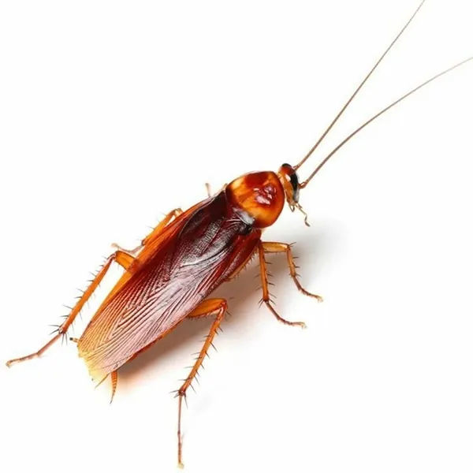
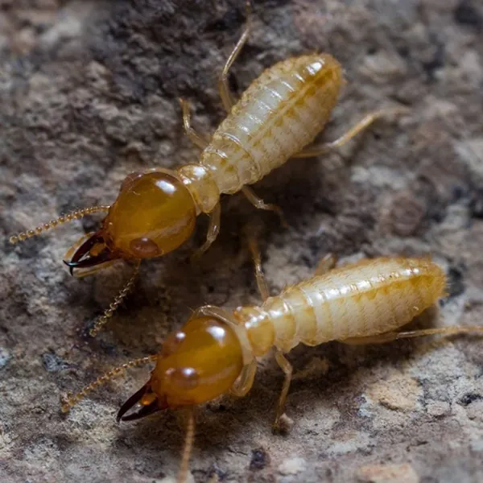
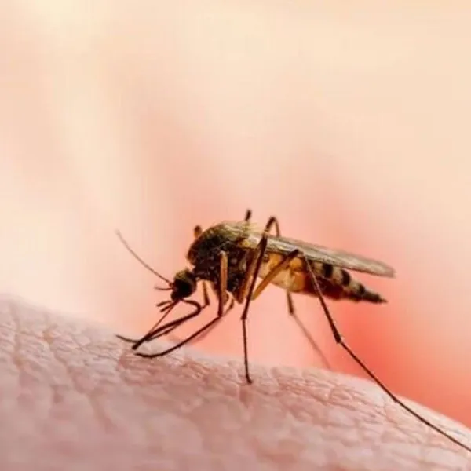
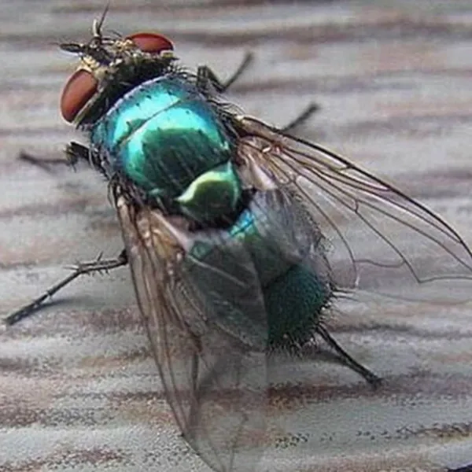

سمپاشی کرج شرکت سمپاشی آرام محیط البرز
سمپاشی حرفهای در کرج و البرز — آرام محیط البرز یک شرکت سمپاشی دارای مجوز رسمی وزارت بهداشت است و خدمات سمپاشی کرج شامل دفع حشرات موذی، موش، سوسک، ساس، موریانه، مورچه و کنه را در منازل، رستورانها، بیمارستانها و صنایع ارائه میدهد. با تیم متخصص و سموم مورد تأیید وزارت بهداشت، محیطی امن و سالم برای شما میسازیم.

نحوه ی کار با ما
سمپاشی در سه مرحله ساده: از مشاوره تا اجرا

01
مشاوره رایگان سمپاشی با کارشناسان آرام محیط البرز
با تماس به 09193613357، از مشاوره رایگان و تخصصی سمپاشی در کرج بهرهمند شوید. کارشناسان مجرب ما در زمینه دفع حشرات موذی، موش، سوسک، موریانه و کنه به تمام سوالات شما پاسخ میدهند و بهترین روش مبارزه با آفات را به شما معرفی میکنند.
02
بازدید کارشناسی و ارزیابی رایگان محل
کارشناسان سمپاشی آرام محیط البرز به محل شما مراجعه و بررسی کامل محیط را انجام میدهند. پس از شناسایی نوع آفت (سوسک، موش، موریانه، کنه یا سایر حشرات)، بهترین روش سمپاشی و دفع آفات را پیشنهاد داده و قرارداد منعقد میشود.


03
اجرای عملیات سمپاشی حرفهای
تیم تخصصی سمپاشی کرج ما با استفاده از جدیدترین تجهیزات و مواد استاندارد، عملیات دفع حشرات موذی را انجام میدهند. چه نیاز به دفع سوسک، موش، موریانه یا کنه داشته باشید، ما محیطی کاملاً پاک و بهداشتی برای شما فراهم میکنیم.
خدمات سمپاشی ما
سمپاشی تخصصی بیمارستانها، رستورانها، منازل و صنایع در کرج و البرز


گالری تصاویر
09193613357
09194870530
026-34209019
رفع نیازهایتان
تا آخرین لحظه ی دفع حشرات موذی با شما همراه خواهیم بود و تا زمانی که تمام نیازهایتان برآورده شود آماده ی خدمات رسانی به شما هستیم.
مشاوره تخصصی و رایگان
پس از برقراری ارتباط با مشاورین ما تنها با یک تماس تلفنی به تمام سوالات شما پاسخ داده می شود و راهنمایی ها و نکات لازم توسط متخصصین ما در اختیار شما قرار میگیرد.
بالاترین کیفیت
ما همواره می کوشیم که بالاترین و با کیفیت ترین خدمات را برای شما فراهم کنیم و تمامی خدمات خود را با بالاترین ایده ال های بهداشتی و حرفه ای در اختیار شما عزیزان قرار دهیم.
بالاترین سطح علمی
شرکت آرام محیط البرز دارای مجوز رسمی از وزارت بهداشت، درمان و آموزش پزشکی می باشد و همواره با استفاده از بروز ترین و جدید ترین روش های علمی و خبره ترین کارشناسان اقدام به انجام خدمات میکند.
مقالات تخصصی سمپاشی و دفع آفات
در این بخش با انواع حشرات موذی و روشهای سمپاشی و دفع آنها آشنا شوید. مطالعه این مقالات به شما کمک میکند تا بهترین روش مقابله با آفات را بشناسید.

دفع مورچه از خانه
چرا مورچهها بعد از اسپری زدن دوباره برمیگردند؟ انواع مورچههای خانگی رایج در ایران و روش طعمهگذاری تخصصی که سم را به ملکه میرساند.

سمپاشی و دفع ساس
نشانههای آلودگی به ساس تخت، تفاوت گزش آن با پشه و کک و دلیل شکست روشهای خانگی در برابر این حشرهی سرسخت خونخوار.

سمپاشی و دفع سوسک
سوسک ناقل دهها نوع باکتری است. راههای ورود سوسک به خانه، مخفیگاههای اصلی و روش ژلگذاری و سمپاشی تضمینی را بشناسید.

سمپاشی و دفع موریانه
موریانه بیصدا سازههای چوبی را از داخل میخورد. نشانههای حملهی موریانه و روشهای ریشهکنی تخصصی آن را بخوانید.

سمپاشی و دفع پشه
پشهها فقط مزاحم خواب نیستند؛ ناقل بیماری هم هستند. کانونهای تکثیر پشه در خانه و روشهای مهپاشی مؤثر را بشناسید.

سمپاشی و دفع مگس
مگس با نشستن روی زباله و سپس غذا، آلودگی را مستقیم به سفرهی شما میآورد. راههای قطع چرخهی تکثیر مگس را بخوانید.

سمپاشی و دفع کنه
کنه ناقل بیماریهای جدی مانند تب کریمه کنگو است. راههای ورود کنه به خانه و حیاط و روشهای دفع اصولی آن را بشناسید.

دفع عقرب و روتیل
نیش عقرب و حضور روتیل در خانه میتواند خطرناک باشد. مخفیگاههای رایج و روشهای ایمنسازی منزل را بخوانید.
دفع موش و تلهگذاری جوندگان
موشها علاوه بر انتقال بیماری، به سیمکشی و لوازم خانه آسیب میزنند. روشهای تلهگذاری و طعمهگذاری اصولی را بشناسید.
سوالات متداول درباره سمپاشی در کرج
پرتکرارترین پرسشهایی که مشتریان پیش از سفارش سمپاشی در کرج از کارشناسان ما میپرسند.
هزینه سمپاشی در کرج چقدر است؟
هزینه سمپاشی ثابت نیست و به متراژ محل، نوع آفت و شدت آلودگی بستگی دارد. سمپاشی یک واحد مسکونی معمولی با سمپاشی یک انبار، رستوران یا سالن تولید تفاوت زیادی دارد. در آرام محیط البرز بازدید و مشاوره اولیه رایگان است؛ کارشناس پس از بررسی محل، قیمت دقیق و قطعی را اعلام میکند و هیچ هزینه پنهانی به آن اضافه نمیشود. برای دریافت برآورد قیمت با شماره ۰۹۱۹۳۶۱۳۳۵۷ تماس بگیرید.
بهترین شرکت سمپاشی در کرج را چگونه انتخاب کنیم؟
پیش از سپردن کار به هر شرکت سمپاشی، این چند مورد را بررسی کنید:
- داشتن مجوز رسمی از وزارت بهداشت، درمان و آموزش پزشکی — این مهمترین ملاک است.
- استفاده از سموم دارای مجوز و ارائه نام و مشخصات سم مصرفی به مشتری.
- ارائه ضمانت کتبی و خدمات پیگیری پس از سمپاشی.
- بازدید و کارشناسی محل پیش از اعلام قیمت، بهجای قیمتگذاری تلفنی و بدون بازدید.
آرام محیط البرز دارای مجوز رسمی وزارت بهداشت و زیر نظر کارشناس بهداشت محیط فعالیت میکند.
سمپاشی چقدر طول میکشد و چه زمانی میتوان به محل برگشت؟
عملیات سمپاشی یک واحد مسکونی معمولی معمولاً بین ۳۰ تا ۹۰ دقیقه زمان میبرد. پس از پایان کار، بسته به نوع سم و روش اجرا، بین ۲ تا ۴ ساعت باید محل خالی و درها و پنجرهها جهت تهویه باز بماند. زمان دقیق بازگشت را کارشناس ما در پایان کار به شما اعلام میکند.
آیا سمپاشی برای کودکان، سالمندان و حیوانات خانگی خطرناک است؟
سمومی که ما استفاده میکنیم مورد تأیید وزارت بهداشت هستند و در دُز استاندارد و توسط اپراتور آموزشدیده به کار میروند. با این حال توصیه میشود در زمان سمپاشی و تا پایان مدت تهویه، کودکان، زنان باردار، سالمندان، بیماران تنفسی و حیوانات خانگی در محل حضور نداشته باشند. ظروف آشپزخانه، مواد غذایی و آکواریوم نیز باید پیش از شروع کار پوشانده یا جابهجا شوند.
سمپاشی را هر چند وقت یکبار باید تکرار کرد؟
برای منازل مسکونی معمولاً سالی یک تا دو نوبت سمپاشی پیشگیرانه کافی است. اما رستورانها، آشپزخانههای صنعتی، بیمارستانها، انبارها و مجتمعهای مسکونی به دلیل تردد و مواد غذایی بیشتر، به برنامه دورهای هر ۱ تا ۳ ماه نیاز دارند. در آلودگیهای شدید — مانند ساس یا سوسک آلمانی — یک نوبت تکرار پس از ۱۴ تا ۲۱ روز برای از بین بردن نسل بعدی آفت ضروری است.
قبل از سمپاشی منزل چه کارهایی باید انجام دهیم؟
- مواد غذایی، ظروف و وسایل آشپزخانه را جمع یا بپوشانید.
- مسیر دیوارها، کابینتها و گوشهها را خلوت کنید.
- آکواریوم را بپوشانید و پمپ هوای آن را موقتاً خاموش کنید.
- حیوانات خانگی را از محل خارج کنید.
- جاروبرقی کشیدن پیش از سمپاشی به اثرگذاری بهتر سم کمک میکند.
آیا آرام محیط البرز مجوز رسمی سمپاشی دارد؟
بله. شرکت آرام محیط البرز دارای مجوز رسمی از وزارت بهداشت، درمان و آموزش پزشکی است و با مدیریت سرکار خانم مهندس فاطمه براتی، کارشناس بهداشت محیط از دانشگاه علوم پزشکی شهید بهشتی، فعالیت میکند. تصویر مجوز در انتهای همین صفحه قابل مشاهده است.
خدمات سمپاشی شما چه مناطقی را پوشش میدهد؟
ما در سراسر کرج — مهرشهر، گوهردشت، عظیمیه، جهانشهر، دهقان ویلا، باغستان، فردیس، ماهدشت و کمالشهر — و همچنین سایر شهرهای استان البرز و مناطق غرب تهران خدمات سمپاشی ارائه میدهیم. برای هماهنگی بازدید با شماره ۰۹۱۹۳۶۱۳۳۵۷ تماس بگیرید.